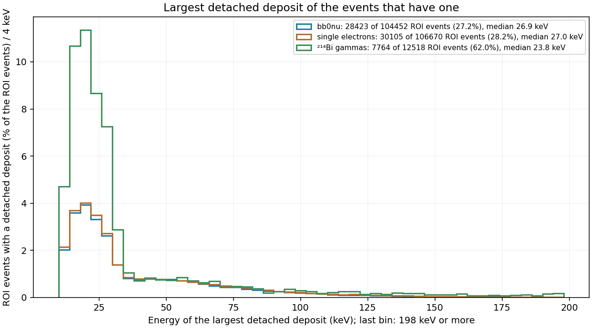
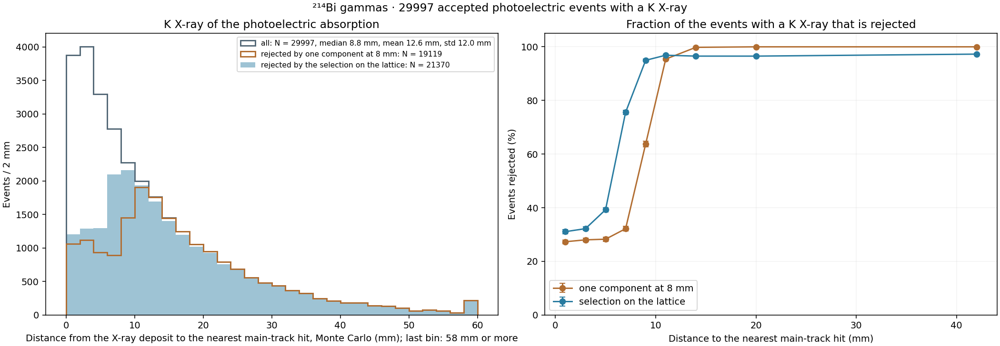

Runs bb0nu_itaca_100k_ion15, single_electrons_itaca_100k_ion15, bi214_itaca_20M_ion15. The selection and its reasons: track selection.
Itrack hits above 5 keV are connected at 5.5 mm. A component with at least 6 hits is a segment; a smaller one with at least 10 keV is a detached deposit. An event is selected with no detached deposit and one segment, or up to 3 segments that join at 8 mm. The ROI is one FWHM (11.6 keV) of the bb0nu electron-energy peak around Qbb = 2457.83 keV.
| Step | bb0nu | single electrons | ²¹⁴Bi gammas | |||
|---|---|---|---|---|---|---|
| Events | Of the ROI | Events | Of the ROI | Events | Of the ROI | |
| Accepted: fiducial selection and gamma veto | 139136 | 145063 | 64667 | |||
| ROI: electron energy within 2452.0–2463.6 keV | 104452 | 100.0% | 106670 | 100.0% | 12518 | 100.0% |
| Rejected: a detached deposit | 28423 | 27.2% | 30105 | 28.2% | 7764 | 62.0% |
| Rejected: segments that stay apart | 1815 | 1.7% | 2124 | 2.0% | 1518 | 12.1% |
| Rejected: no segment, or more than 3 | 0 | 0.0% | 2 | 0.0% | 0 | 0.0% |
| Selected | 74214 | 71.1% | 74439 | 69.8% | 3236 | 25.9% |
| one segment | 72221 | 69.1% | 71156 | 66.7% | 2998 | 23.9% |
| two or three segments joined at 8 mm | 1993 | 1.9% | 3283 | 3.1% | 238 | 1.9% |
| For comparison: one component in each track, 8 mm on 3 mm cells | 77326 | 74.0% | 78152 | 73.3% | 3813 | 30.5% |
Each number is the signal efficiency of the step divided by the square root of the background efficiency of the same step.
| Background | ROI cut | One component at 8 mm | Selection on the lattice | Ratio of the last two |
|---|---|---|---|---|
| single electrons | 0.88 | 0.86 | 0.85 | 0.983 |
| ²¹⁴Bi gammas | 1.71 | 1.34 | 1.40 | 1.042 |

All 64667 accepted events, before the ROI cut. The main electron comes from the first interaction listed; the percentages are the fraction of each class that passes.
| Interaction that produced the main electron | Accepted | One component at 8 mm | Selection on the lattice |
|---|---|---|---|
| Photoelectric absorption with a K X-ray | 30100 | 10947 (36.4%) | 8692 (28.9%) |
| Photoelectric absorption without | 10224 | 6882 (67.3%) | 6497 (63.5%) |
| Compton scattering | 24263 | 1535 (6.3%) | 1265 (5.2%) |
| Pair production | 80 | 1 (1.2%) | 0 (0.0%) |
For the photoelectric events with a K X-ray, the distance from the X-ray deposit to the nearest hit of the main track decides whether it can be seen. Within about 4 mm it shares cells with the track.
